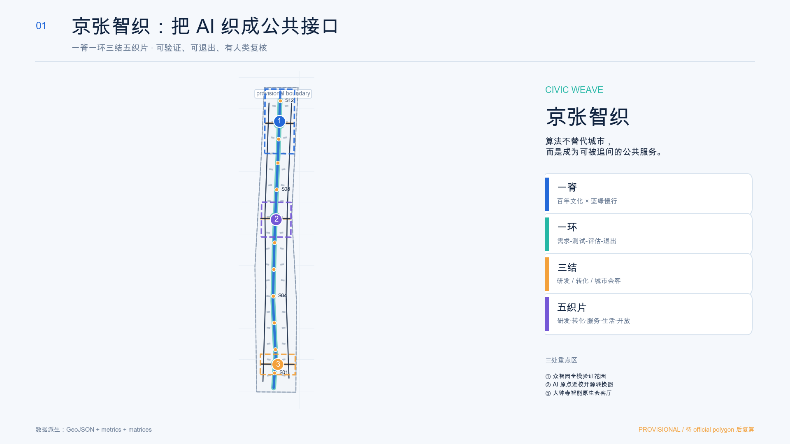
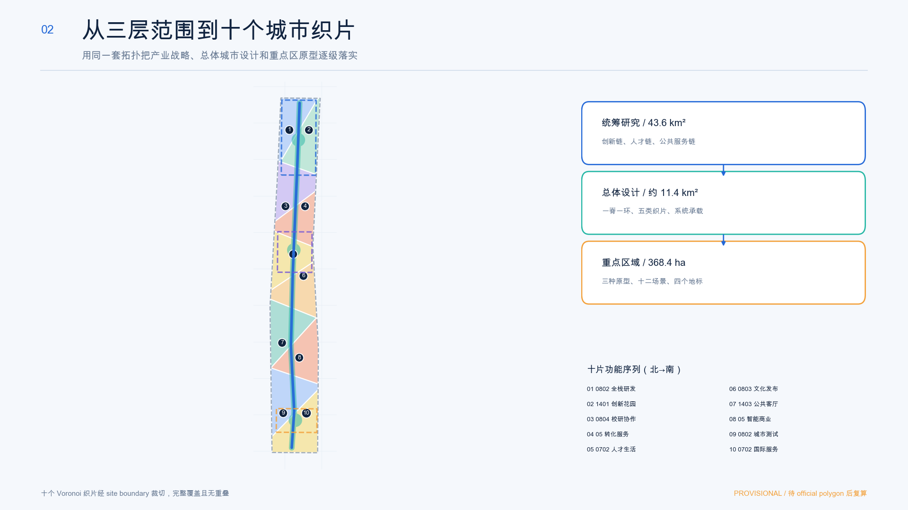
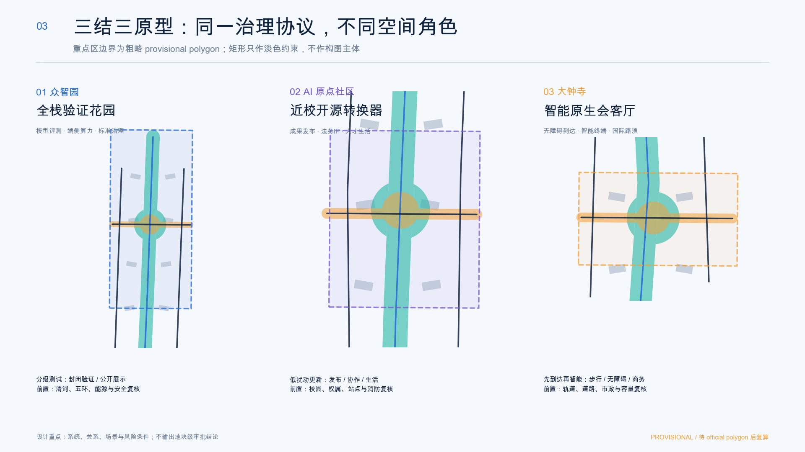
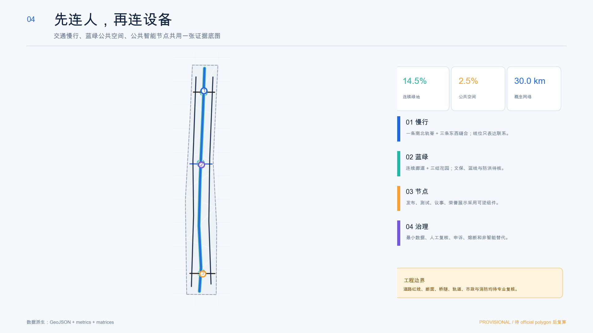
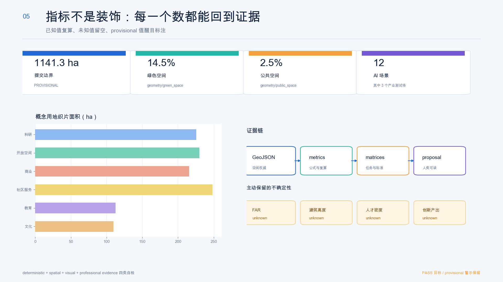

京张智织
一脊一环三结五织片：把 AI 变成可看见来源、可退出服务、可人工复核的城市公共接口。
核心指标
全部设计层指标来自 EPSG:4548 复算；official polygon 到位后统一重算。
总览地图

总体概念
一脊
百年京张文化、慢行和蓝绿公共空间连续骨架。
一环
需求-测试-评估-公开-退出的公共智能闭环。
三结
众智园、AI 原点社区、大钟寺差异化验证。
五织片
研发、转化、公共服务、生活文化、蓝绿开放空间。
三层范围

用地分区
十个拓扑安全织片完整覆盖边界，采用标准用地代码；大块 provisional 边界在图中仅作为淡色虚线约束。
| 层级 | 任务 | 输出 |
|---|---|---|
| 43.6 km² 统筹研究 | 创新生态与未来城市 | 协同机制、案例、运营 |
| 约11.4 km² 总体设计 | 城市更新与空间系统 | 九类结构化图层 |
| 368.4 ha 重点区域 | 三种片区原型 | 空间-场景-治理包 |
重点区域

众智园 · 全栈验证花园
模型评测、端侧算力、开源工具链、标准治理；测试与公众展示分级。
AI 原点 · 近校开源转换器
成果发布、开源协作、人才生活、法务与知识产权服务。
大钟寺 · 智能原生会客厅
到达与无障碍优先，叠加智能体、终端、内容和国际路演。
交通慢行 × 蓝绿公共空间

建筑与更新项目
建筑图层是 36 个概念空间原型，不是现状测绘或拆改留结论。
- 价值与结构调查
- 适应性再利用优先
- 可逆公共服务模块
- 专业比较后再讨论拆建
更新项目
CW-01 证据底板、CW-02 轨脊界面、CW-03 三结客厅、CW-04 公共智能协议、CW-05 全球 AI 活动季。
AI 场景
12 张场景卡包含 3 个产业测试场；每张卡都必须有最小数据、人工复核、停止条件和非智能替代。
可解释模型实验室
公开测试集；偏差越界或不可解释即停。
端侧低碳算力沙盒
能耗汇总；能源与消防未核即不部署。
无障碍终端测试场
自愿测试；安全风险未闭环即停。
开源发布厅
贡献可溯源，版权争议可下架。
AI法律诊所
执业人员最终判断。
慢行协作导航
聚合数据，现场标识兜底。
社区生活代理
端侧优先，一键清除转人工。
文化叙事织机
清权史料，文史专家校对。
维护分诊助手
不自动处罚，不做身份画像。
数据授权会客厅
授权可撤回，日志可审计。
全球AI活动周
容量与安全负责人复核。
夜间安心伴行
主动开启，不做常态跟踪。
任务覆盖
公告 1.3、1.4、1.5 共 17 项任务和 agent.1-agent.6 已映射到章节、图层、指标、图纸、来源、假设和自检。

自检状态
deterministic validation、spatial review、visual packaging、professional evidence 四类检查最终以本地命令输出为准。
来源
官方公告、清权任务书、官方标准本地快照、source registry 与六个官方案例页面。
假设
边界、重点区、控规、道路、权属、建筑、文保、市政、公共服务九类缺口已登记。